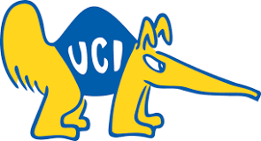

Zhaoyang Lu
Can be called by: Alyssa
Pronoun: She/She++
Hi! I am a student of University of California, Irvine majoring Informatics of the The Donald Bren School of Information and Computer Sciences . I have some experience with Python and Java. I also know some knowledge about project management. Here what I mean by some experience is that I systematically learned these knowledge in school and did some projects about these tools. I am interested in UI/UX design and front-end programming but I just started it. Aside from school life, I like Brazil Jujiztu and Historical Martial Art with Weapon. If we share any common interests, please contact me through this email: 41v1rj@gmail.com.